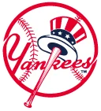

Historical player · 1B
Ottavinia High Minors
- Nickname (as stored)
- Paul
- Position
- 1B
- Bats/Throws
- R/L
- Major-league seasons
- 1960–1967 (4)
- Main franchise
 New York Yankees
New York Yankees- Status
- Retired
| Year | Team | Lg | G | PA | AB | R | H | 2B | 3B | HR | RBI | SB | CS | BB | K | AVG | OBP | SLG | OPS | WAR |
|---|---|---|---|---|---|---|---|---|---|---|---|---|---|---|---|---|---|---|---|---|
| 1960 |  Baltimore Orioles Baltimore Orioles | AL | 5 | 6 | 6 | 0 | 0 | 0 | 0 | 0 | 0 | 0 | 0 | 0 | 3 | .000 | .000 | .000 | .000 | -0.1 |
| 1965 |  Cleveland Guardians Cleveland Guardians | AL | 11 | 8 | 6 | 0 | 0 | 0 | 0 | 0 | 0 | 0 | 0 | 2 | 2 | .000 | .250 | .000 | .250 | -0.1 |
| 1965 | New York Yankees | AL | 98 | 231 | 205 | 21 | 52 | 11 | 0 | 7 | 31 | 1 | 0 | 20 | 46 | .254 | .326 | .410 | .736 | 1.0 |
| 1965 total | 109 | 239 | 211 | 21 | 52 | 11 | 0 | 7 | 31 | 1 | 0 | 22 | 48 | .246 | .324 | .398 | .722 | 0.9 | ||
| 1966 | New York Yankees | AL | 61 | 82 | 75 | 11 | 14 | 5 | 0 | 3 | 13 | 0 | 0 | 4 | 20 | .187 | .225 | .373 | .598 | 0.0 |
| 1967 | New York Yankees | AL | 17 | 29 | 26 | 2 | 2 | 0 | 0 | 0 | 0 | 0 | 0 | 3 | 5 | .077 | .172 | .077 | .249 | -0.3 |
| Career | 4 seasons | 192 | 356 | 318 | 34 | 68 | 16 | 0 | 10 | 44 | 1 | 0 | 29 | 76 | .214 | .283 | .358 | .642 | 0.5 |
| Year | Team | Pos | G | GS | Inn | TC | PO | A | E | DP | Fld% |
|---|---|---|---|---|---|---|---|---|---|---|---|
| 1960 | Baltimore Orioles | LF | 1 | 0 | 3.0 | 0 | 0 | 0 | 0 | 0 | - |
| 1965 | Cleveland Guardians | 1B | 3 | 0 | 3.0 | 2 | 2 | 0 | 0 | 0 | 1.000 |
| 1965 | New York Yankees | 1B | 61 | 43 | 422.1 | 447 | 398 | 45 | 4 | 41 | .991 |
| 1965 | New York Yankees | 3B | 3 | 1 | 12.0 | 4 | 0 | 4 | 0 | 0 | 1.000 |
| 1966 | New York Yankees | 1B | 47 | 14 | 192.1 | 224 | 196 | 25 | 3 | 11 | .987 |
| 1967 | New York Yankees | 1B | 13 | 4 | 66.0 | 77 | 66 | 8 | 3 | 5 | .961 |
| Career | 1B | 124 | 61 | 683.2 | 750 | 662 | 78 | 10 | 57 | .987 | |
| Career | 3B | 3 | 1 | 12.0 | 4 | 0 | 4 | 0 | 0 | 1.000 | |
| Career | LF | 1 | 0 | 3.0 | 0 | 0 | 0 | 0 | 0 | - |
Seasons before 2002 are real MLB history from the OOTP export, mapped by OOTP onto this league's 30 original franchises (club names are as they were in that season). 2002 is this universe. Player names are as the export stores them (apart from a few Alexander has renamed in his game since this dump, such as Babe Ruth): OOTP gives some historical players generated names (the 586-homer career is filed under “Legendre Robinson”), and the site keeps them. Every player links to a page: 2002 players to their season pages, everyone else to a historical career page.